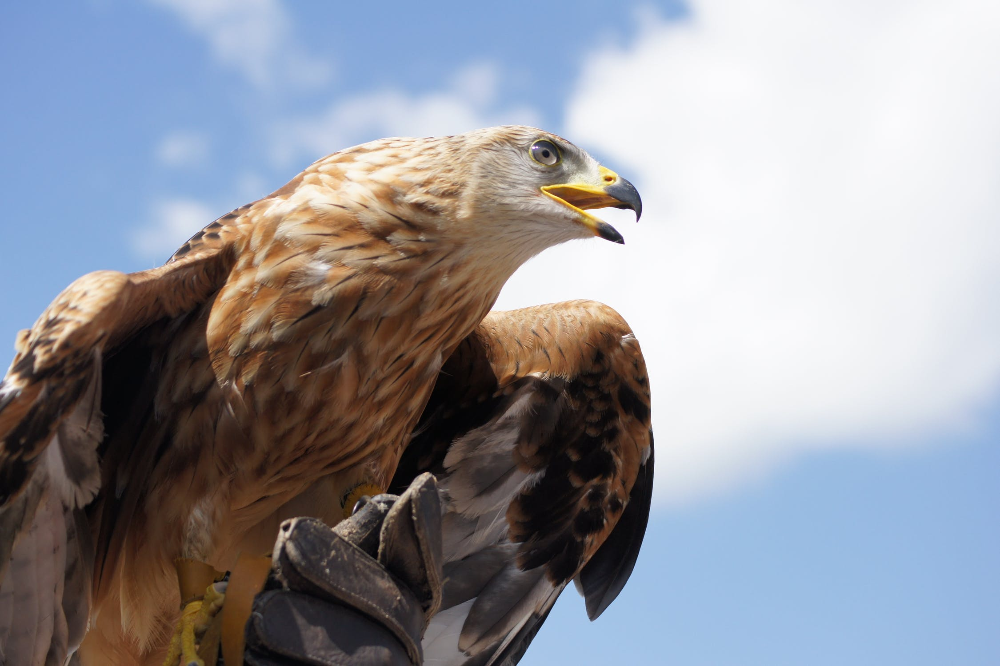
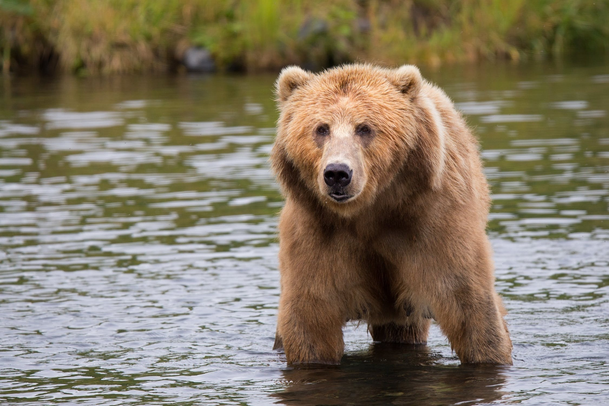
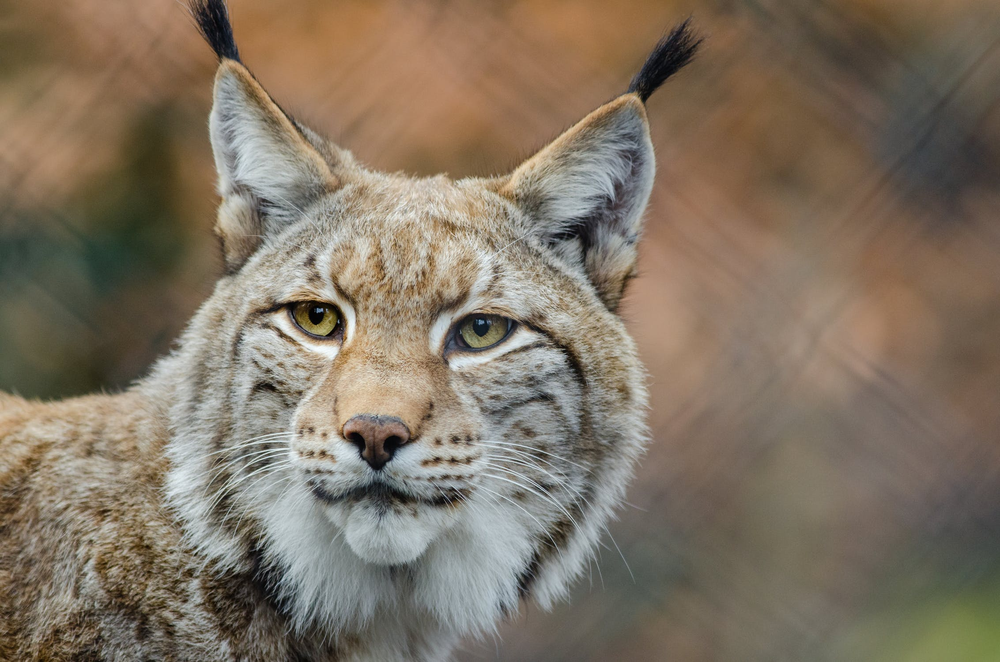
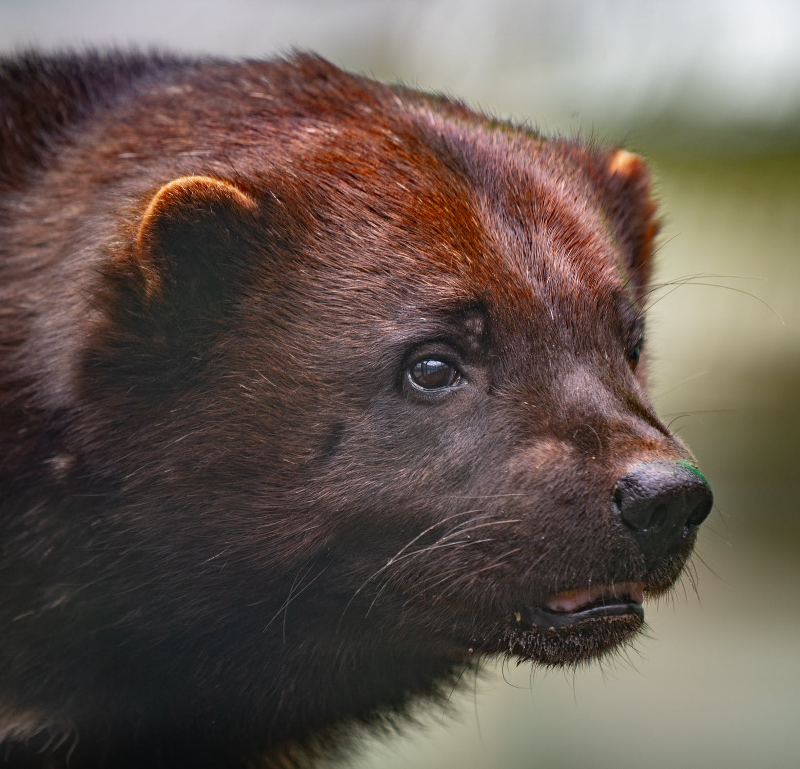
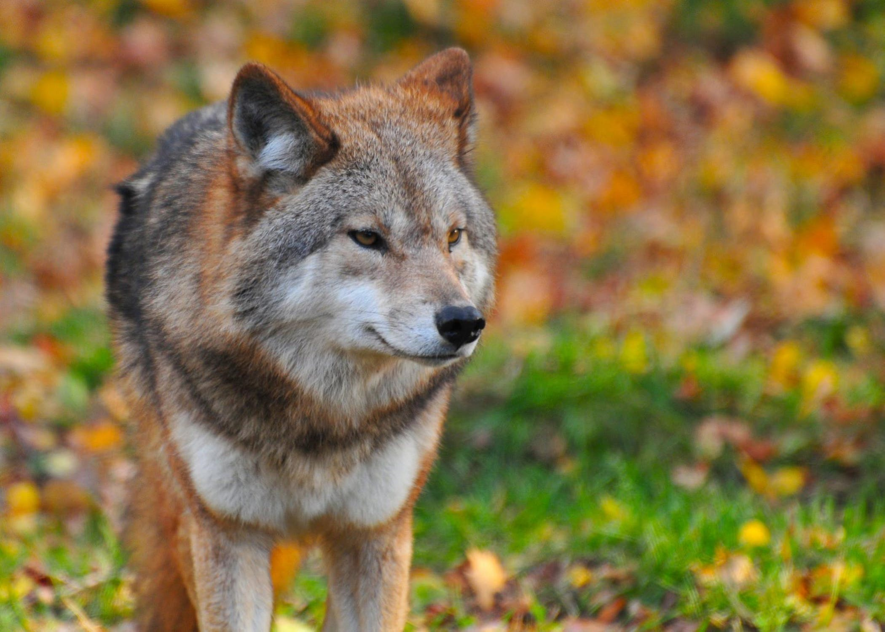

Kungsörn (Aquila chrysaetos) är en rovfågel som tillhör familjen Accipitridae, och som förekommer på norra halvklotet i Eurasien, Nordamerika och delar av Afrika. Som hos många rovfåglar är honorna större än hanarna. Den adulta kungsörnen varierar från svartbrun till mörkt brun med en guldbrun hjässa och nacke. Juvenilen har vita partier på vingundersidorna och stjärten vilka ruggas bort tills den anlägger adult dräkt vid cirka fem års ålder. Kungsörnen nyttjar sin hastighet, rörlighet och mycket kraftfulla klor för att fånga olika sorters byten, främst medelstora däggdjur och fåglar men även i mindre utsträckning as och ödlor. Kungsörnen är monogama och par håller samman i flera år, eller till och med livet ut. Paret håller revir som kan vara mycket stora och inom reviret byggs ofta flera bon som de alternerar mellan under olika år. Bona placeras på upphöjda platser som klippor, träd eller av människan byggda konstruktioner. De bygger mycket stora plattformsformade bon. Honan lägger ett till fyra ägg som båda föräldrarna ruvar i 40–45 dagar. Typiskt överlever en till två ungar som blir flygfärdiga efter ungefär tre månader.
Björnar (Ursidae) är en familj av större rovdjur och som idag omfattar åtta arter som förekommer över stora delar av norra- och södra halvklotet. Björnar lever i Eurasien, Nord- och Sydamerika och de fanns tidigare även i norra Afrika. Arterna är främst allätare med undantag av jättepandan som huvudsakligen lever av bambuskott och isbjörnen som har kött som huvudföda.
Lodjur (vanligen kallat Lo) (Lynx lynx) är ett kattdjur som förekommer i Europa och Asien. Lodjuret är Europas största kattdjur och fanns en gång i skogar över stora delar av den europeiska kontinenten och vidare österut till Sibirien. På Iberiska halvön förekommer istället den närbesläktade panterlon. Trots att lodjurets utbredningsområde historiskt minskat är arten fortfarande ett vitt spritt kattdjur och sammantaget betraktas arten inte som hotad av Internationella naturvårdsunionen.
Järven (/ˈwʊlvəriːn/) (även stavat järv), Gulo gulo (Gulo är latin för "frossare"), även kallad frossare, carcajou eller quickhatch (från East Cree, kwiihkwahaacheew), är den största landbostaden arter av familjen Mustelidae. Det är en muskulös köttätare och ett ensamt djur.[2] Järven har ett rykte för grymhet och styrka som inte står i proportion till sin storlek, med den dokumenterade förmågan att döda byten många gånger större än den själv.
Varg, gråvarg, eller ulv (Canis lupus) är ett rovdjur vars utbredningsområde sträcker sig över stora delar av världen. Vargen är det största vilda hunddjuret och en fullvuxen varg väger vanligen 30 till 50 kg[4]. En mängd underarter är beskrivna men det vetenskapligt faktiskt accepterade antalet är under diskussion. Vargen är även stamfader till hunden. En gång i tiden var arten världens mest spridda däggdjur men den har utrotats från stora delar av Västeuropa, södra Asien, Mexiko och betydande delar av Nordamerika.[1] Varg uppträder främst, men inte enbart, i vildmark. Dess utbredningsområde har kraftigt reducerats genom avsiktlig förföljelse på grund av vargens predation av vilt och tamboskap, tillsammans med rädslan för attacker mot människan. Flera regionala populationer är allvarligt hotade. Den globala populationen är dock inte hotad. Arten har ett relativt stort utbredningsområde och populationen är stabil och kategoriseras därför som livskraftig av IUCN sedan 2004.[1]
Menu ammogos 1000